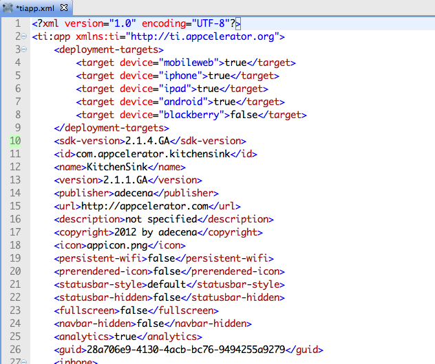
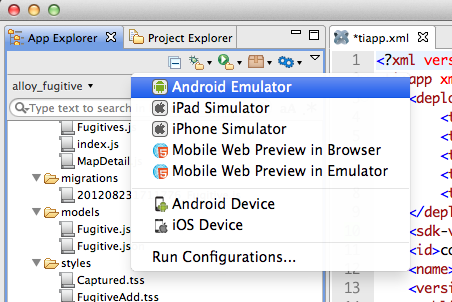

Titanium Basics
Titanium Certified Developer (TCD) Training
In this lesson, you will:
- Set up the tools and SDKs needed for Titanium development
- Create and configure a mobile project
- Build and run a project in the simulator/emulator
 Topic
Topic
Tools and SDKs
SDKs and Requirements
- Native SDKs are required
- Android
- Oracle JDK
- Android SDK (ADK)
- Download platform & tool sets
- Path and Environment settings
- iOS
- Xcode
- A Mac! (Intel-based)
- Future: BB10 & Windows Phone 8
Android SDK Files

- Install by unzipping
- Directories:
- platforms
- add-ons
- platform-tools
- tools
Android Platforms

androidscript- SDK v8 required
- Must use Google APIs version
- Current mix at:
http://developer.android.com/
about/dashboards
Path & Environment
- OS X
- Edit ~/.bash_profile (hidden, might not exist)
- Add path to
toolsandplatform-toolsfolders to your PATH - Restart terminal
- Windows
- Edit System Properties in Control Panel
- Set PATH to both
toolsandplatform-toolsdirectories - Make sure you've also set the JDK's path and JAVAHOME variables
iOS: Xcode

- Not much setup, download and install
- Location depends on OS X version
Handy Tools


Studio Setup
- Runs on OS X, Windows, and Linux
 Dashboard will help you through SDK setup steps.
Dashboard will help you through SDK setup steps. Configure SDK locations:
Configure SDK locations:- Open a tiapp.xml
- Click Configure
- Specify locations
- Make sure to set a default Android SDK
... and choose a Google APIs version!
Titanium Releases
Titanium Mobile uses the OSGI version standard for releases: major.minor.patch.tag
| Tag | Description | Example |
|---|---|---|
| vDATETIME | Continuous Integration = nightly builds | 2.1.4.v20121005103353 |
| Beta# | Beta test build | 2.1.4.Beta1 |
| CR# | Release Candidate | 2.1.4.CR1 |
| GA | General Availability | 2.1.4.GA |
CI Builds: http://builds.appcelerator.com.s3.amazonaws.com/index.html
Topic
Creating & Configuring Projects
Creating a Project

Tiapp.xml Editor - GUI mode

- Set App ID, version, and more
- Select Titanium SDK and platform support
- Specify modules used
- Cloud enable
Tiapp.xml Editor - XML mode
- Configure orientation support
- Platform-specific:
- iOS: Info.plist keys, hardware requirements, etc.
- Android: tooling, theme, custom versioning, etc.
- See Guides: Building Native Applications > Appendices > Tiapp.xml and timodule.xml Reference
Topic
Building & Running Projects
Building a Project
- Debug, Run, and Publish menus
- Options based on targets configured in Tiapp.xml
- Studio does a "preflight" check
- For iOS installations, need to configure provisioning profiles
Building at the Command Line

- NodeJS-based command line interface
- Integrate with custom code repositories, CI configurations, more
- Integrate with editors other than Studio
Build Options

Demo
- Create a default "classic" project
- Configure tiapp.xml options
- Run it in the simulator/emulator
- Configure run configuration settings
Summary
In this lesson, you:
- Set up the tools and SDKs needed for Titanium development
- Created and configured a mobile project
- Built and ran a project in the simulator/emulator
Q&A
Lab Objectives
In this lab, you will:
- Create a default project
- Run it in the simulator/emulator using both Studio and the CLI
- Configure app and run-time options
Solution Walkthrough